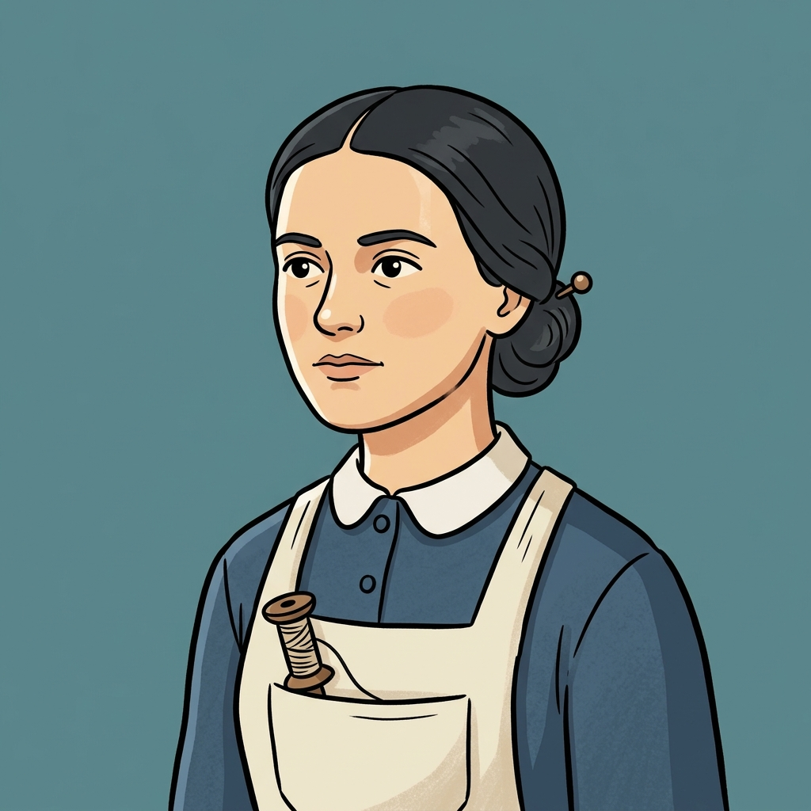
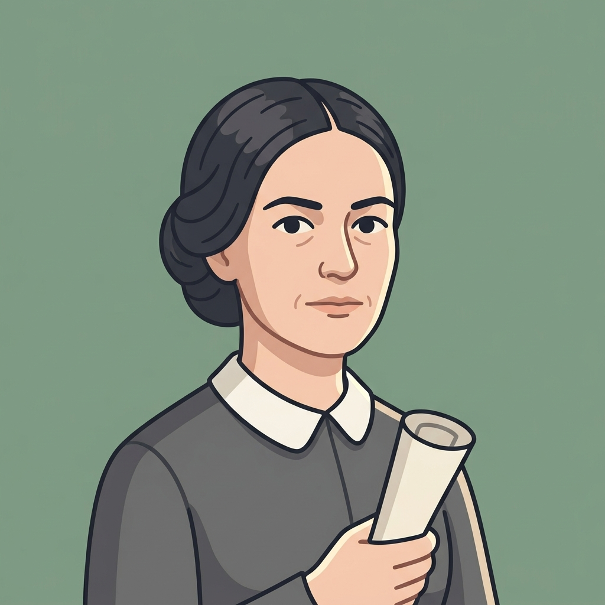

<!DOCTYPE html>
<html lang="en">
<head>
<meta charset="utf-8">
<meta name="viewport" content="width=device-width, initial-scale=1">
<title>A Day in the Lowell Mills · SPX Open House</title>
<link rel="stylesheet" href="../assets/brand.css">
<style>
  html, body { margin: 0; height: 100%; overflow: hidden; background: #f2ede3; font-family: var(--spx-body); color: var(--spx-ink); }
  lowell-scene { position: fixed; top: 52px; left: 0; right: 0; bottom: 0; }

  .story {
    position: fixed; top: 66px; left: 14px; bottom: 14px; width: 440px; max-width: calc(100vw - 28px); z-index: 800;
    display: flex; flex-direction: column; background: var(--spx-paper); border: 2px solid var(--spx-navy); border-radius: 10px;
    box-shadow: 0 10px 30px rgba(12,35,64,.25); overflow: hidden;
  }
  .story-top { background: var(--spx-navy); color: var(--spx-cream); padding: 12px 16px; display: flex; flex-direction: column; gap: 4px; flex-shrink: 0; }
  .kicker { font: 800 11px var(--spx-display); letter-spacing: .08em; color: var(--spx-gold-2); }
  .story-top h1 { margin: 0; font: 900 21px/1.15 var(--spx-display); }
  .steps { display: flex; gap: 4px; margin-top: 6px; }
  .steps i { flex: 1; height: 5px; border-radius: 3px; background: rgba(255,255,255,.2); }
  .steps i.on { background: var(--spx-gold); }
  .story-body { flex: 1; overflow-y: auto; padding: 14px 16px 16px; display: flex; flex-direction: column; gap: 12px; font-size: 17px; line-height: 1.45; }
  .story-body p { margin: 0; }
  .story-body .spx-read p + p { margin-top: 8px; }
  .story-foot { flex-shrink: 0; padding: 12px 16px; border-top: 1px solid #e3dac6; display: flex; gap: 10px; align-items: center; justify-content: flex-end; background: var(--spx-cream); }
  .story-foot .note { margin-right: auto; font-size: 13px; font-weight: 600; color: var(--spx-muted); }

  .worker { display: flex; gap: 10px; align-items: center; padding: 8px 10px; border: 2px dashed var(--spx-navy-3); border-radius: 8px; background: var(--spx-cream); }
  .worker .av { width: 34px; height: 34px; border-radius: 50%; display: grid; place-items: center; font: 900 15px var(--spx-display); border: 2px solid var(--spx-navy); flex-shrink: 0; }
  .worker b { display: block; font-size: 15px; }
  .worker span { font-size: 13px; font-weight: 600; color: var(--spx-muted); }
  .meters { display: grid; grid-template-columns: auto 1fr auto auto 1fr auto; gap: 5px 7px; align-items: center; font-size: 12.5px; font-weight: 700; }
  .meters .bar { height: 8px; min-width: 30px; background: #e6dece; border-radius: 5px; overflow: hidden; }
  .meters .bar span { display: block; height: 100%; border-radius: 5px; transition: width .8s ease; }
  .meters .v { font-variant-numeric: tabular-nums; min-width: 28px; text-align: right; }

  .picks { display: flex; flex-direction: column; gap: 8px; border-radius: 10px; }
  .pick {
    text-align: left; display: flex; gap: 12px; align-items: center; padding: 10px 12px; border-radius: 8px;
    border: 2px solid var(--spx-navy); background: #fff; font: 600 16px/1.35 var(--spx-body); color: var(--spx-ink); cursor: pointer;
  }
  .pick:hover, .pick:focus-visible { background: var(--spx-tan); outline: 3px solid var(--spx-gold); outline-offset: 1px; }
  .pick .k { flex-shrink: 0; width: 28px; height: 28px; border-radius: 6px; display: grid; place-items: center; background: var(--spx-navy); color: var(--spx-cream); font: 800 13px var(--spx-display); }
  .pick small { display: block; font-size: 13px; color: var(--spx-muted); font-weight: 600; }

  .bells { display: grid; grid-template-columns: repeat(3, 1fr); gap: 6px; border-radius: 10px; }
  .bell { padding: 8px 4px; border-radius: 8px; border: 2px solid var(--spx-navy); background: #fff; cursor: pointer; font: inherit; color: var(--spx-ink); display: flex; flex-direction: column; align-items: center; gap: 1px; }
  .bell b { font: 800 15px var(--spx-display); }
  .bell span { font-size: 13px; font-weight: 700; color: var(--spx-muted); }
  .bell.seen { background: var(--spx-cream); }
  .bell.on { background: var(--spx-navy); color: var(--spx-cream); }
  .bell.on span { color: var(--spx-gold-2); }
  .bell:focus-visible { outline: 3px solid var(--spx-gold); outline-offset: 1px; }

  .box { border-radius: 8px; padding: 10px 12px; background: var(--spx-cream); border-left: 6px solid var(--spx-gold); font-size: 16px; }
  .box.dark { background: var(--spx-navy); color: var(--spx-cream); border-left-color: var(--spx-gold); }
  .box.warn { background: #fbeeea; border-left-color: var(--spx-bad); }
  .box .lbl { font: 800 11px var(--spx-display); letter-spacing: .07em; color: var(--spx-muted); margin-bottom: 3px; }
  .box.dark .lbl { color: var(--spx-gold-2); }
  .quote { display: flex; gap: 12px; align-items: flex-start; }
  .quote img { width: 70px; height: 70px; object-fit: cover; border-radius: 8px; border: 2px solid var(--spx-navy); flex-shrink: 0; }
  .quote q { font-weight: 700; font-size: 16px; }
  .quote .plain { margin-top: 6px; font-size: 15px; }
  .quote cite { display: block; font-style: normal; font-size: 13px; color: var(--spx-muted); margin-top: 4px; }

  .hz-row { display: flex; flex-wrap: wrap; gap: 6px; border-radius: 10px; padding: 2px; }
  .hzb { border: 2px solid var(--spx-bad); background: #fff; color: var(--spx-bad); border-radius: 999px; padding: 5px 12px; font: 800 14px var(--spx-body); cursor: pointer; }
  .hzb.seen { background: #fbeeea; }
  .hzb.on { background: var(--spx-bad); color: #fff; }
  .hzb:focus-visible { outline: 3px solid var(--spx-gold); outline-offset: 1px; }

  .outcome .chosen { font-weight: 800; }
  .diary { font-family: Georgia, 'Times New Roman', serif; font-style: italic; font-size: 17px; background: #fbf6e7; border: 1px solid #e3d6b4; border-radius: 6px; padding: 10px 12px; }
  .diary::before { content: 'Her diary · '; font-style: normal; font-weight: 700; font-family: var(--spx-body); font-size: 13px; color: var(--spx-muted); }
  .deltas { display: flex; flex-wrap: wrap; gap: 6px; }
  .deltas span { font-size: 13px; font-weight: 800; padding: 2px 9px; border-radius: 999px; }
  .deltas .up { background: #e2f1e7; color: var(--spx-good); }
  .deltas .dn { background: #fbe6e0; color: var(--spx-bad); }

  .year { font: 900 46px/1 var(--spx-display); color: var(--spx-navy); }
  .growbar { height: 8px; background: #e6dece; border-radius: 4px; overflow: hidden; }
  .growbar span { display: block; height: 100%; background: var(--spx-gold); width: 0; }
  ul.end { margin: 0; padding-left: 20px; display: flex; flex-direction: column; gap: 6px; }

  @media (max-width: 860px) { .story { width: calc(100vw - 28px); bottom: auto; max-height: 55vh; } }
</style>
</head>
<body>
<lowell-scene></lowell-scene>

<section class="story" aria-live="polite">
  <div class="story-top">
    <div class="kicker" id="kicker"></div>
    <h1 id="heading"></h1>
    <div class="steps" id="steps"></div>
  </div>
  <div class="story-body" id="body"></div>
  <div class="story-foot" id="foot"></div>
</section>

<script src="../assets/kiosk.js"></script>
<script src="./lowell-scene.js"></script>
<script>
(function () {
  SPX.bar({ title: 'A Day in the Lowell Mills', subtitle: 'U.S. History · Lowell, Massachusetts, 1836–1845' });
  const idle = SPX.idle({ seconds: 120, warn: 20 });

  const hunt = SPX.hunt({
    title: 'Scavenger Hunt',
    items: [
      { id: 'bell', locked: true, q: 'What time did the first bell wake up the mill workers?', hint: 'Click the bells at the boarding house.',
        choices: ['4:30 in the morning', '7:00 in the morning', '9:00 in the morning'], answer: 0,
        why: 'The first bell rang at 4:30 in the morning! Work started at 5:00.' },
      { id: 'belt', locked: true, q: 'Which part of the loom could grab long hair and pull a worker in?', hint: 'Look at a loom up close and find the dangers.',
        choices: ['The shuttle', 'The open belt', 'The cloth roller'], answer: 1,
        why: 'The leather belt had no cover. There were no safety laws yet.' },
      { id: 'ten', locked: true, q: 'What did Sarah Bagley’s group want?', hint: 'Go to the mill gate.',
        choices: ['The right to vote', 'Free rooms in the boarding house', 'A 10-hour workday'], answer: 2,
        why: 'Lawmakers said no in 1845. Workers kept trying, and a law finally passed in 1874.' },
    ],
  });

  // ---------- data (adapted from the full classroom game, written for middle school readers) ----------
  const MET = [['sav', 'Savings', '#c9a24a'], ['hea', 'Health', '#c2715a'], ['ind', 'Freedom', '#4f7fb3'], ['rep', 'Boss’s opinion', '#5f8f96'], ['fam', 'Family', '#5f9a6e']];
  const WORKERS = [
    { name: 'Abigail', color: '#c2715a', age: 15, from: 'A rocky farm in New Hampshire', goal: 'Help her family pay what they owe on the farm', d: { fam: 15, hea: 5 } },
    { name: 'Sarah', color: '#6b8fb3', age: 17, from: 'A dairy farm in Vermont', goal: 'Save money for school', d: { sav: 10, fam: 5 } },
    { name: 'Mary', color: '#8f7fae', age: 19, from: 'A fishing town in Maine', goal: 'Live on her own for the first time', d: { ind: 15, hea: -5 } },
  ];
  const BELLS = [
    ['4:30', 'AM · Wake up', 4.5, 'The first bell rings. Workers get out of bed. It is still dark outside.'],
    ['5:00', 'AM · Work', 5.1, 'The factory gates close and the machines start. The boss writes down anyone who is late.'],
    ['7:00', 'AM · Breakfast', 7.1, 'Workers rush back to the boarding house to eat. They get about 35 minutes. Then the bell calls them back to work.'],
    ['12:30', 'PM · Lunch', 12.6, 'Lunch is the biggest meal of the day. Workers get about 35 minutes again.'],
    ['7:00', 'PM · Done', 19.1, 'The machines finally stop. Workers have been at the factory for about 13 hours. They do this 6 days a week.'],
    ['10:00', 'PM · Locked', 22.1, 'The boarding house doors are locked for the night. Anyone who comes back late can get in trouble with the company.'],
  ];
  const HAZ = [
    ['Shuttle', 'The shuttle', 'The shuttle is a wooden piece with metal tips. It shoots back and forth very fast to weave the thread. If it flew off its track, it could hit a worker in the face or eye.'],
    ['Belt', 'The open belt', 'A leather belt carried power down from a spinning pole in the ceiling. Nothing covered it. A sleeve, an apron string, or long hair could get caught and pull a worker into the machine.'],
    ['Gears', 'The open gears', 'Metal gears turned on the side of the loom with no cover. Workers were paid for how much cloth they made, so they often fixed things without stopping the machine. One slip could crush a finger.'],
    ['Beater', 'The beater', 'After each pass of the shuttle, this bar slams forward to pack the threads tight. A hand reaching in to fix a broken thread could get hit.'],
    ['Air', 'The air', 'The rooms were kept hot and wet so the thread would not break, and windows were often shut. Workers breathed cotton dust all day, which hurt their lungs. The loud noise hurt their hearing.'],
  ];
  const CHOICES = {
    payday: { title: 'Your first payday', scen: '{n}, you worked all week, and now you get paid! After you pay for your room and food, you have $2.25 left. What will you do with your money?', opts: [
      { t: 'Send most of it home to my family', d: { fam: 15, sav: -15, ind: -5 }, out: 'Your family uses the money to help pay what they owe on the farm. You have little left, but they are proud of you. Many mill workers sent money home.', diary: 'Sent $2 home today. Mother will be glad. I kept a few pennies for thread.' },
      { t: 'Save it in the bank', d: { sav: 20, ind: 5 }, out: 'Your savings start to grow. For many mill workers, this was the first money they ever had of their own.', diary: 'Opened my own bank account today. My own name in the book!' },
      { t: 'Buy new clothes, books, and a ticket to a talk in town', d: { ind: 10, sav: -10, fam: -5 }, out: 'You enjoy city life! But your family wonders why you send so little money home.', diary: 'Bought new clothes and a ticket to a talk in town. Lowell is nothing like the farm.' }] },
    loom: { title: 'A third loom', scen: 'Years go by. Now the company wants more cloth for less money. It speeds up the machines and pays less for each piece of cloth. Your boss asks you to run a third loom. He gets a bonus if his workers make more cloth.', opts: [
      { t: 'Take the third loom', d: { sav: 25, hea: -15, rep: 10 }, looms: 3, out: 'You earn more money. But you run between machines all day. By night your back hurts, and you cough from the cotton dust. Your boss gets his bonus.', diary: 'Three looms now. I can hardly keep up. I cough every night.' },
      { t: 'Say no', d: { sav: -5, rep: -15 }, looms: 2, out: 'The boss gives the loom to someone else. He calls you a troublemaker. Your pay stays the same, even though prices keep going up.', diary: 'Said no to the third loom. The boss has not spoken to me since.' },
      { t: 'Ask for more pay first', d: { sav: 20, hea: -15, rep: -10, ind: 5 }, looms: 3, out: 'He laughs. “There are girls lined up at the gate who would take this job.” You take the third loom anyway, for the same low pay.', diary: 'Asked for more pay. He laughed. I took the loom anyway.' }] },
    petition: { title: 'Fight for a shorter workday', scen: 'Sarah Bagley’s group wants a law that says no one has to work more than 10 hours a day. They ask you to sign a petition. A petition is a letter to lawmakers signed by many people. They also need workers to speak to lawmakers in Boston. The company is watching who joins.', opts: [
      { t: 'Speak to the lawmakers in Boston', d: { ind: 20, rep: -25 }, out: 'You tell the lawmakers about your 13-hour workdays. They thank you, but they say no. Back at the mill, your boss keeps a close eye on you.', outF: 'You tell the lawmakers about your 13-hour workdays. They say no. When you get back, the company fires you. They put your name on a blacklist, a list of workers that no mill will hire.', diary: 'Spoke to the lawmakers today. My knees shook, but I said it all.', diaryF: 'I have been fired. No mill in Lowell will hire me now.' },
      { t: 'Sign the petition, but stay quiet', d: { ind: 10, rep: -5 }, out: 'Your name joins thousands of others. The lawmakers still say no, but the workers keep trying.', diary: 'Signed my name today with many others. We will keep at it.' },
      { t: 'Don’t sign', d: { rep: 10, ind: -10 }, out: 'You keep your job and stay out of trouble. Many workers did the same. They could not risk losing their pay.', diary: 'I did not sign. I cannot lose this job. But I felt bad when the others went.' }] },
  };

  // ---------- state ----------
  const ST = { step: 0, wk: null, m: null, fired: false, bell: null, bellsSeen: new Set(), hz: null, hzSeen: new Set(), loomClose: false, looms: 2, outcome: null, grown: false, growing: false, sound: true };
  const STEP_COUNT = 7;
  const $ = (id) => document.getElementById(id);
  const esc = (s) => String(s).replace(/[&<>"]/g, (c) => ({ '&': '&amp;', '<': '&lt;', '>': '&gt;', '"': '&quot;' }[c]));
  const read = (html) => `<div class="spx-read"><span class="spx-read-lbl">📖 READ</span>${html}</div>`;
  const turn = (text) => `<div class="spx-turn"><span class="spx-turn-lbl">👉 YOUR TURN</span>${text}</div>`;

  // ---------- scene control ----------
  const sceneState = { done: [0, 0, 0, 0, 0, 0, 0], current: 7, focus: null, cut: false, time: 10, sunday: false, gate: true, looms: 2, bale: null, intro: true, growth: 0, growSnap: true, panelX: 0, panelY: 0, loomClose: false, hz: null };
  function scene(patch) {
    Object.assign(sceneState, patch);
    sceneState.panelX = window.innerWidth >= 860 ? -(Math.min(440, window.innerWidth - 28) + 14) : 0;
    window.__lowellState = Object.assign({}, sceneState);
    window.dispatchEvent(new CustomEvent('lowell:state', { detail: Object.assign({}, sceneState) }));
  }
  window.addEventListener('resize', () => scene({}));
  window.addEventListener('lowell:grow', (e) => {
    const g = e.detail.g, y = $('growYear'), bar = $('growBar');
    if (y) y.textContent = Math.round(1821 + g * 19);
    if (bar) bar.style.width = (g * 100).toFixed(0) + '%';
    if (ST.growing && g >= 0.999) { ST.growing = false; ST.grown = true; render(); }
  });
  window.addEventListener('lowell:hazard', (e) => { if (ST.step === 3 && ST.loomClose) pickHazard(e.detail.index); });

  // ---------- sound (synthesized, nothing to download) ----------
  let ac = null, loomSrc = null;
  const audio = () => { try { ac = ac || new (window.AudioContext || window.webkitAudioContext)(); ac.resume(); return ac; } catch (e) { return null; } };
  function ringBell() {
    if (!ST.sound) return;
    const ctx = audio(); if (!ctx) return;
    const t = ctx.currentTime;
    [[523, .5], [1047, .25], [1569, .12]].forEach(([f, v]) => {
      const o = ctx.createOscillator(), g = ctx.createGain();
      o.type = 'sine'; o.frequency.value = f;
      g.gain.setValueAtTime(0, t); g.gain.linearRampToValueAtTime(v * .35, t + .01); g.gain.exponentialRampToValueAtTime(.0001, t + 2.2);
      o.connect(g); g.connect(ctx.destination); o.start(t); o.stop(t + 2.3);
    });
  }
  function loomBuffer(ctx, n) {
    const sr = ctx.sampleRate, len = sr * 2, buf = ctx.createBuffer(1, len, sr), d = buf.getChannelData(0);
    const looms = 24 + n * 8, rate = 1.8 + (n - 2) * 0.45, L = Math.floor(sr * 0.02), dec = sr * 0.004;
    for (let l = 0; l < looms; l++) {
      const per = sr / (rate * (0.9 + Math.random() * 0.2)); let t0 = Math.random() * per;
      while (t0 < len) { const a = 0.25 + Math.random() * 0.3, s0 = t0 | 0; for (let i = 0; i < L && s0 + i < len; i++) d[s0 + i] += (Math.random() * 2 - 1) * a * Math.exp(-i / dec); t0 += per; }
    }
    let m = 0;
    for (let i = 0; i < len; i++) { const t = i / sr; d[i] = d[i] * 0.35 + Math.sin(6.2832 * 58 * t) * 0.07 + Math.sin(6.2832 * 116 * t) * 0.03 + (Math.random() * 2 - 1) * 0.05; m = Math.max(m, Math.abs(d[i])); }
    for (let i = 0; i < len; i++) d[i] *= 0.8 / m;
    return buf;
  }
  function startLoomSound() {
    stopLoomSound();
    if (!ST.sound) return;
    const ctx = audio(); if (!ctx) return;
    const src = ctx.createBufferSource(); src.buffer = loomBuffer(ctx, ST.looms); src.loop = true;
    const f = ctx.createBiquadFilter(); f.type = 'lowpass'; f.frequency.value = 2600;
    const g = ctx.createGain(); g.gain.value = 0.25;
    src.connect(f); f.connect(g); g.connect(ctx.destination); src.start(); loomSrc = src;
  }
  function stopLoomSound() { if (loomSrc) { try { loomSrc.stop(); } catch (e) {} loomSrc = null; } }

  // ---------- meters ----------
  function applyDelta(d) {
    const before = Object.assign({}, ST.m);
    ST.m.sav += 30; ST.m.hea -= 3; // a season of work: wages in, health slowly worn down
    Object.keys(d).forEach((k) => (ST.m[k] += d[k]));
    Object.keys(ST.m).forEach((k) => (ST.m[k] = k === 'sav' ? Math.max(0, ST.m[k]) : Math.max(0, Math.min(100, ST.m[k]))));
    return MET.map(([k, label]) => [label, ST.m[k] - before[k], k]).filter((x) => x[1] !== 0);
  }
  function workerHTML() {
    if (!ST.wk) return '';
    const w = ST.wk;
    const rows = MET.map(([k, label, col]) => {
      const v = ST.m[k], pct = k === 'sav' ? Math.min(100, v / 1.5) : v;
      return `<span>${label}</span><div class="bar"><span style="width:${pct}%;background:${col}"></span></div><span class="v">${k === 'sav' ? '$' + v : v}</span>`;
    }).join('');
    return `<div class="worker"><div class="av" style="background:${w.color}">${w.name[0]}</div><div><b>${w.name}, age ${w.age}</b><span>${w.from} · Goal: ${w.goal}</span></div></div>
      <div class="meters">${rows}</div>`;
  }

  // ---------- rendering ----------
  let guideTarget = null, guideLabel = '';
  const guide = (target, label) => { guideTarget = target; guideLabel = label; };
  function frame(kicker, heading, body, foot) {
    $('kicker').textContent = kicker;
    $('heading').textContent = heading;
    $('steps').innerHTML = Array.from({ length: STEP_COUNT }, (_, i) => `<i class="${i <= ST.step ? 'on' : ''}"></i>`).join('');
    $('body').innerHTML = body;
    $('foot').innerHTML = foot || '';
    $('body').scrollTop = 0;
  }
  const nextBtn = (label, enabled = true, note = '') => `${note ? `<span class="note">${note}</span>` : ''}<button class="btn-spx gold" type="button" data-act="next" ${enabled ? '' : 'disabled style="opacity:.45;cursor:not-allowed"'}>${label}</button>`;
  const footBtn = () => $('foot').querySelector('button:not([disabled])');

  function choiceStep(key, kicker) {
    const C = CHOICES[key];
    if (ST.outcome) {
      const o = ST.outcome;
      const deltas = o.deltas.map(([label, v, k]) => `<span class="${v > 0 ? 'up' : 'dn'}">${label} ${v > 0 ? '+' : ''}${k === 'sav' ? '$' : ''}${v}</span>`).join('');
      frame(kicker, C.title, `${workerHTML()}
        <div class="outcome box"><div class="lbl">${esc(ST.wk.name.toUpperCase())} CHOSE</div><div class="chosen">${esc(o.opt.t)}</div></div>
        ${read(`<p>${esc(o.fired ? o.opt.outF : o.opt.out)}</p>`)}
        <div class="deltas">${deltas}</div>
        <div class="diary">${esc(o.fired ? o.opt.diaryF : o.opt.diary)}</div>`,
        nextBtn('Next →'));
      guide(footBtn(), 'Click Next');
      return;
    }
    frame(kicker, C.title, `${workerHTML()}
      ${read(`<p>${esc(C.scen.replace('{n}', ST.wk.name))}</p>`)}
      ${turn('Make a choice. It will change her life!')}
      <div class="picks" id="picks">${C.opts.map((o, i) => `<button class="pick" type="button" data-act="choose" data-i="${i}"><span class="k">${'ABC'[i]}</span><span>${esc(o.t)}</span></button>`).join('')}</div>`,
      '<span class="note">Tip: you can also press A, B or C.</span>');
    guide($('picks'), 'Pick one');
  }

  function choose(i) {
    const key = ST.step === 2 ? 'payday' : ST.step === 4 ? 'loom' : 'petition';
    const opt = CHOICES[key].opts[i];
    const deltas = applyDelta(opt.d);
    let fired = false;
    if (key === 'petition' && i === 0 && ST.m.rep < 35) { fired = ST.fired = true; }
    if (opt.looms) { ST.looms = opt.looms; scene({ looms: opt.looms }); }
    ST.outcome = { opt, deltas, fired };
    render();
  }

  function render() {
    const s = ST.step;
    guide(null);
    if (s === 0) {
      scene({ focus: null, cut: false, time: 10, loomClose: false, intro: true });
      const body = `${read(`<p>In 1821, this spot next to a river in Massachusetts was just farmland. Then rich businessmen built giant factories here, called <b>mills</b>. The falling river water turned big wheels that ran the machines. The mills turned cotton into cloth.</p>`)}
        <div class="box"><div class="year" id="growYear">1821</div><div class="growbar" style="margin-top:8px"><span id="growBar"></span></div></div>
        ${ST.grown ? read('<p>By 1840, more than 20,000 people lived in the new city of Lowell. About 8,000 of them worked in the mills. Most of the workers were young women from farms.</p>') : ''}
        <div class="box dark"><div class="lbl">YOUR MISSION</div>Pretend you are a young mill worker. Make choices and see how they change her life. Answer the scavenger hunt questions in the corner as you go.</div>`;
      frame('U.S. HISTORY · ABOUT 5 MINUTES', 'A Day in the Lowell Mills', body,
        ST.grown ? nextBtn('Meet your mill worker →') : ST.growing ? '<span class="note">Watch the city grow…</span>' : `<button class="btn-spx ghost" type="button" data-act="skipgrow">Skip</button><button class="btn-spx gold" type="button" data-act="grow">Watch Lowell grow →</button>`);
      if (ST.grown) { $('growYear').textContent = '1840'; $('growBar').style.width = '100%'; }
      if (!ST.growing) guide($('foot').querySelector('.gold'), ST.grown ? 'Click to keep going' : 'Start here');
    } else if (s === 1) {
      scene({ focus: 2, time: 10, intro: true });
      frame('STEP 1 · PICK YOUR WORKER', 'Who are you?', `${read('<p>It’s 1836. You are a girl leaving your family’s farm to work in the Lowell mills.</p>')}
        ${turn('Pick who you want to be.')}
        <div class="picks" id="picks">${WORKERS.map((w, i) => `<button class="pick" type="button" data-act="worker" data-i="${i}"><span class="k" style="background:${w.color};color:var(--spx-navy)">${w.name[0]}</span><span><b>${w.name}, age ${w.age}</b><small>${w.from} · Goal: ${w.goal}</small></span></button>`).join('')}</div>
        <p style="font-size:14px;color:var(--spx-muted);font-weight:600">These workers are made up, but what happens to them is based on real history.</p>`);
      guide($('picks'), 'Pick one');
    } else if (s === 2) {
      if (!ST.payday) {
        const b = ST.bell != null ? BELLS[ST.bell] : null, need = Math.max(0, 3 - ST.bellsSeen.size);
        scene({ focus: 2, time: b ? b[2] : 4.5, intro: true });
        frame('STEP 2 · THE BOARDING HOUSE', 'Life by the bell', `${workerHTML()}
          ${read('<p>Mill workers lived together in big company houses called <b>boarding houses</b>. Bells told them when to wake up, work, eat, and sleep.</p>')}
          ${turn(need ? `Click the bells to see a worker’s day. Ring ${need} more.` : 'Nice! Ring more bells, or click Next.')}
          <div class="bells" id="bells">${BELLS.map((x, i) => `<button class="bell ${ST.bell === i ? 'on' : ST.bellsSeen.has(i) ? 'seen' : ''}" type="button" data-act="bell" data-i="${i}"><b>${x[0]}</b><span>${x[1]}</span></button>`).join('')}</div>
          ${b ? `<div class="box" id="readNow"><div class="lbl">📖 ${b[0]} ${b[1].toUpperCase()}</div>${b[3]}</div>` : ''}`,
          nextBtn('Next: Payday →', !need));
        if (need) guide($('bells'), ST.bellsSeen.size ? 'Ring another bell' : 'Click a bell');
        else guide(footBtn(), 'Click Next');
      } else {
        scene({ focus: 2, time: 19.1, intro: true });
        choiceStep('payday', 'STEP 2 · CHOICE 1 OF 3');
      }
    } else if (s === 3) {
      scene({ focus: 3, cut: true, time: 10, loomClose: ST.loomClose, hz: ST.hz, intro: true });
      if (!ST.loomClose) {
        frame('STEP 3 · INSIDE THE MILL', 'The weaving room', `${workerHTML()}
          ${read('<p>We took away part of the wall so you can see inside. Workers here run <b>looms</b>, machines that weave thread into cloth. One giant water wheel powers every machine in the building.</p>')}
          <div class="box quote"><div><q>…the buzzing and hissing and whizzing of pulleys and rollers… around me often grew tiresome.</q><div class="plain"><b>In other words:</b> the machines were so loud and busy that they wore her out.</div><cite>Lucy Larcom, who started working in the mills at age 11</cite></div></div>
          ${turn('Your worker is the girl in blue-green. Let’s look at her loom up close.')}`,
          `<button class="btn-spx gold" type="button" data-act="close">See the loom up close →</button>`);
        guide(footBtn(), 'Click here');
      } else {
        const h = ST.hz != null ? HAZ[ST.hz] : null, need = Math.max(0, 2 - ST.hzSeen.size);
        frame('STEP 3 · INSIDE THE MILL', 'One loom, up close', `${workerHTML()}
          ${read('<p>Looms had no safety covers. There were no safety laws yet.</p>')}
          ${turn(need ? `Find the dangers! Click the red numbers on the loom, or the buttons below. Find ${need} more.` : 'Good job! Find more dangers, or click Next.')}
          <div class="hz-row" id="hz">${HAZ.map((x, i) => `<button class="hzb ${ST.hz === i ? 'on' : ST.hzSeen.has(i) ? 'seen' : ''}" type="button" data-act="hz" data-i="${i}">${i + 1} · ${x[0]}</button>`).join('')}</div>
          ${h ? `<div class="box warn" id="readNow"><div class="lbl">📖 DANGER ${ST.hz + 1}: ${h[1].toUpperCase()}</div>${h[2]}</div>` : ''}
          <div class="box dark"><div class="lbl">IF A WORKER GOT HURT</div>She did not get paid while she was hurt. Often she lost her job.</div>
          <button class="btn-spx ghost" type="button" data-act="sound" style="align-self:flex-start">${ST.sound ? '🔊 Factory noise: on' : '🔇 Factory noise: off'}</button>`,
          nextBtn('Next →', need === 0));
        if (need) guide($('hz'), ST.hzSeen.size ? 'Find one more' : 'Click a danger');
        else guide(footBtn(), 'Click Next');
      }
    } else if (s === 4) {
      scene({ focus: 3, cut: true, time: 10, loomClose: false, hz: null, intro: true });
      choiceStep('loom', 'STEP 4 · CHOICE 2 OF 3');
    } else if (s === 5) {
      scene({ focus: 4, cut: false, time: 12.6, loomClose: false, intro: true });
      if (!ST.gateRead) {
        frame('STEP 5 · THE MILL GATE', 'Workers fight back', `${workerHTML()}
          ${read('<p>By 1845, mill workers worked 13 to 14 hours a day, 6 days a week. Some women decided to work together to change that.</p>')}
          <div class="box quote"><div><q>…when our rights are trampled upon and we appeal in vain to legislators, what shall we do but appeal to the people?</q><div class="plain"><b>In other words:</b> if lawmakers won’t listen to us, we will ask the public for help.</div><cite>Sarah Bagley, mill worker and leader, 1845</cite></div></div>
          ${read('<p>Bagley led a group of women mill workers. They wanted the workday cut to 10 hours.</p>')}`,
          nextBtn('Next: Your choice →'));
        guide(footBtn(), 'Click Next');
      } else {
        choiceStep('petition', 'STEP 5 · CHOICE 3 OF 3');
      }
    } else if (s === 6) {
      scene({ focus: null, cut: false, time: 19.1, loomClose: false, intro: true });
      const n = ST.wk.name, m = ST.m, L = [];
      L.push(m.sav >= 120 ? `${n} saved $${m.sav}. That was more money than most women of her time ever had.` : m.sav >= 50 ? `${n} saved $${m.sav}. It wasn’t a lot, but it was her own money.` : `${n} saved almost nothing. Her pay went to her room, her family, or hard times.`);
      if (ST.fired) L.push(`${n} was blacklisted for speaking up. She never worked in a Lowell mill again.`);
      L.push(m.hea < 60 ? `Years of dusty air left ${n} with a cough that never went away. Many mill workers went home sick.` : m.hea >= 75 ? `${n} stayed fairly healthy.` : `The long days wore ${n} down, but not as much as some workers.`);
      if (m.fam >= 65) L.push(`The money ${n} sent home helped her family.`); else if (m.fam < 45) L.push(`${n} grew apart from her family back home.`);
      L.push(m.ind >= 50 ? `${n} learned to speak up. Many mill workers later became teachers, writers, and leaders.` : `${n} kept quiet and kept working, like most workers did.`);
      const huntLeft = hunt.total - hunt.solvedCount();
      frame('THE END OF HER STORY', `What happened to ${n}?`, `${workerHTML()}
        ${read(`<ul class="end">${L.map((x) => `<li>${esc(x)}</li>`).join('')}</ul>`)}
        <div class="box"><div class="lbl">WHAT REALLY HAPPENED</div>In 1845, lawmakers said no to the 10-hour workday. Workers kept fighting for years. Finally, in <b>1874</b>, Massachusetts passed a law: women could not be made to work more than 10 hours a day.</div>
        ${huntLeft ? `<div class="box warn"><div class="lbl">ALMOST DONE!</div>You still have ${huntLeft} scavenger hunt question${huntLeft === 1 ? '' : 's'} to answer in the corner.</div>` : ''}
        <div class="box dark"><div class="lbl">IN CLASS, WE GO FURTHER</div>Students visit 7 places in Lowell. They learn about the Irish workers who dug the canals by hand, and how the mills used cotton picked by enslaved people in the South. Then they answer a big question: <b>Who gained from the factories, and who paid the price?</b></div>`,
        `<button class="btn-spx ghost" type="button" data-act="again">Play again</button><button class="btn-spx gold" type="button" data-act="home">Back to menu</button>`);
      if (!huntLeft) guide($('foot').querySelector('.gold'), 'All done!');
    }
    if (guideTarget) guideTarget.scrollIntoView({ block: 'nearest' });
    // keep the text they just opened (a bell or a danger) on screen too
    if ($('readNow')) $('readNow').scrollIntoView({ block: 'nearest' });
    SPX.guide(guideTarget, guideLabel, 'right');
    const first = guideTarget && (guideTarget.matches('button') ? guideTarget : guideTarget.querySelector('button'));
    if (first && document.activeElement === document.body) first.focus({ preventScroll: true });
  }

  function pickHazard(i) {
    ST.hz = i; ST.hzSeen.add(i);
    if (i === 1) hunt.unlock('belt');
    render();
  }

  // ---------- input ----------
  document.querySelector('.story').addEventListener('click', (e) => {
    const b = e.target.closest('button'); if (!b || b.disabled) return;
    const act = b.dataset.act, i = +b.dataset.i;
    if (act === 'grow') { audio(); ST.growing = true; idle.busyUntil = Date.now() + 15000; scene({ growth: 0, growSnap: true }); setTimeout(() => scene({ growth: 1, growSnap: false }), 60); render(); }
    else if (act === 'skipgrow') { ST.growing = false; ST.grown = true; scene({ growth: 1, growSnap: true }); render(); }
    else if (act === 'worker') { const w = WORKERS[i]; ST.wk = w; ST.m = { sav: 0, hea: 85, ind: 30, rep: 50, fam: 50 }; Object.keys(w.d).forEach((k) => (ST.m[k] += w.d[k])); ST.step = 2; render(); }
    else if (act === 'bell') { ST.bell = i; ST.bellsSeen.add(i); ringBell(); if (i === 0) hunt.unlock('bell'); render(); }
    else if (act === 'choose') choose(i);
    else if (act === 'close') { ST.loomClose = true; startLoomSound(); render(); }
    else if (act === 'hz') pickHazard(i);
    else if (act === 'sound') { ST.sound = !ST.sound; ST.sound ? startLoomSound() : stopLoomSound(); render(); }
    else if (act === 'again') location.reload();
    else if (act === 'home') SPX.goHome();
    else if (act === 'next') advance();
  });
  function advance() {
    const s = ST.step;
    if (s === 0) { scene({ growth: 1, growSnap: true }); ST.step = 1; }
    else if (s === 2 && !ST.payday) { ST.payday = true; }
    else if (s === 2) { ST.step = 3; ST.outcome = null; }
    else if (s === 3) { stopLoomSound(); ST.loomClose = false; ST.hz = null; ST.step = 4; }
    else if (s === 4) { ST.step = 5; ST.outcome = null; hunt.unlock('ten'); }
    else if (s === 5 && !ST.gateRead) { ST.gateRead = true; }
    else if (s === 5) { ST.step = 6; ST.outcome = null; }
    render();
  }
  window.addEventListener('keydown', (e) => {
    if (e.target.closest && e.target.closest('.hunt')) return;
    const k = e.key.toLowerCase();
    if (['a', 'b', 'c'].includes(k)) { const b = $('body').querySelector(`[data-act=choose][data-i="${'abc'.indexOf(k)}"]`); if (b) b.click(); }
    if (/^[1-6]$/.test(k)) { const b = $('body').querySelector(`[data-act=bell][data-i="${+k - 1}"], [data-act=hz][data-i="${+k - 1}"], [data-act=worker][data-i="${+k - 1}"]`); if (b) b.click(); }
  });

  render();
})();
</script>
</body>
</html>
